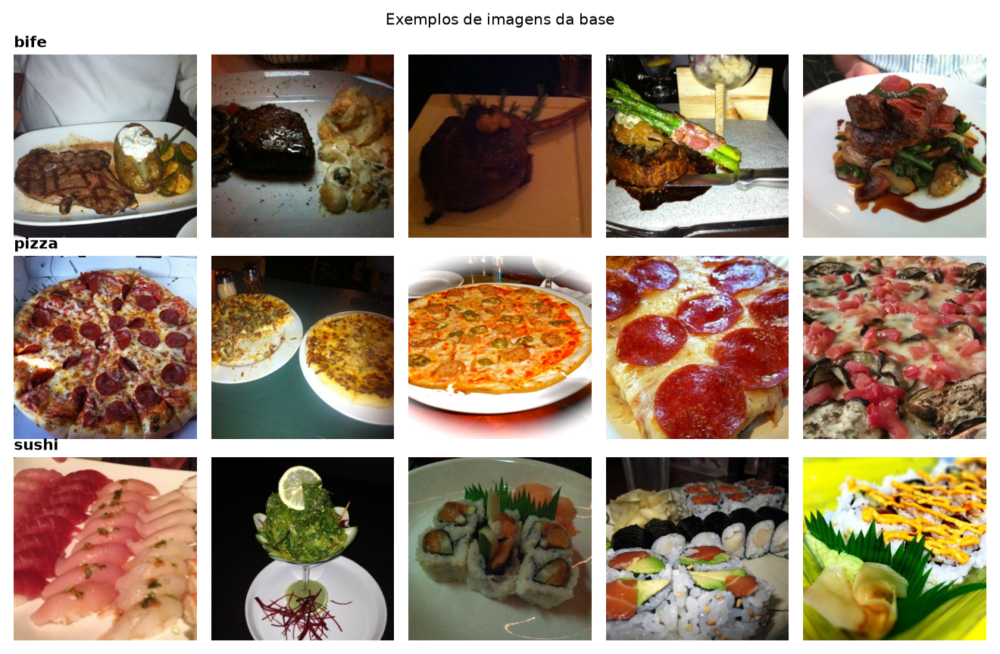
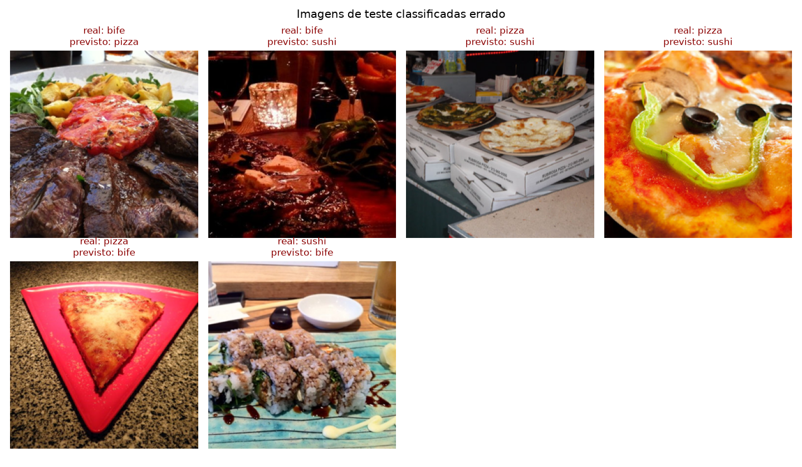

Bife, pizza
ou sushi?
Um modelo de visão computacional que olha a foto de um prato e diz qual dos três ela mostra.
- Professor
- Prof. Dr. Joelton Deonei Gotz
- Integrantes
- Carlos Hobmeier, Amanda Queiroz e João Vitor de Freitas
- Modelo
- ResNet-18 com transfer learning (PyTorch)
O que foi pedido e onde está
O PjBL2 pede um modelo de visão computacional que classifique imagens em pelo menos 3 categorias. Cada exigência corresponde a um arquivo do projeto.
-
✓
Base de imagens com 3 categorias 600 fotos reais de bife, pizza e sushi, do dataset público Food-101 —
etapa1_obter_dataset.py -
✓
Protocolo experimental: treino, validação e teste Divisão estratificada 70% / 15% / 15% com semente fixa —
etapa2_dividir_dataset.py -
✓
Modelo de visão computacional que classifica o problema Rede neural convolucional ResNet-18 com transfer learning —
etapa3_treinar_modelo.py -
✓
Matriz de confusão e principais métricas Matriz de confusão, acurácia, precisão, revocação, especificidade e F1 —
etapa4_avaliar_modelo.py -
✓
Grupo de até 3 integrantes Carlos Hobmeier, Amanda Queiroz e João Vitor de Freitas
-
!
Defesa de autoria Conforme o cronograma do plano de ensino.
Seiscentas fotos de pratos de verdade
Usamos um subconjunto do Food-101, uma base pública com fotos de comida tiradas por pessoas comuns em restaurantes e em casa. A iluminação, o ângulo e o fundo variam bastante, o que deixa o problema mais próximo da vida real do que fotos de estúdio.
O arquivo original já vinha separado em treino e teste, mas juntamos todas as imagens em uma pasta por classe para fazer a divisão com o nosso próprio protocolo (etapa 2).
- bife204
- pizza200
- sushi196
- total600

Três conjuntos que nunca se misturam
As imagens foram divididas por holdout estratificado: cada foto vai para
exatamente um conjunto, e cada conjunto mantém a mesma proporção de bife, pizza e sushi da base completa.
A semente aleatória fixa (SEMENTE = 42) faz a divisão ser sempre a mesma, então qualquer
pessoa que rodar o código obtém os mesmos conjuntos.
Treino
As únicas imagens com que o modelo aprende. Os pesos são ajustados para errar menos nelas.
Validação
Avaliada a cada época para escolher a melhor versão do modelo e decidir quando parar o treino.
Teste
Guardado até o final e usado uma única vez. Mostra como o modelo se sai com fotos inéditas.
| conjunto | bife | pizza | sushi | total |
|---|---|---|---|---|
| treino | 142 | 140 | 138 | 420 |
| validação | 31 | 30 | 29 | 90 |
| teste | 31 | 30 | 29 | 90 |
| total | 204 | 200 | 196 | 600 |
Reaproveitar o que uma rede já sabe
Treinar uma rede neural do zero com só 420 fotos faria o modelo decorar as imagens em vez de aprender (overfitting). Por isso usamos transfer learning: partimos da ResNet-18, uma rede convolucional já treinada em 1,2 milhão de imagens do ImageNet, que já sabe reconhecer bordas, texturas e formas.
Congelamos todas as camadas dessa rede e trocamos apenas a última, que classificava 1000 categorias, por uma nova camada com 3 saídas. Só essa camada nova é treinada.
11.176.512 parâmetros que não mudam
1.539 parâmetros ajustados
Ou seja: de 11,2 milhões de parâmetros, só 0,014% foram treinados. Por isso o treino leva menos de um minuto e funciona bem com poucas imagens.
Como o treino foi feito
| Função de perda | entropia cruzada |
| Otimizador | Adam, taxa de aprendizado 0,001 |
| Tamanho do lote | 32 imagens |
| Épocas | até 25, com parada antecipada após 4 sem melhora |
| Aumento de dados (só no treino) | recorte aleatório e espelhamento horizontal |
| Modelo escolhido | a época com menor perda na validação |
Evolução do treinamento
A cada época o modelo passa por todas as fotos de treino e depois é avaliado na validação. A melhor versão apareceu na época 20; nas quatro seguintes a validação não melhorou, e o treino parou sozinho na época 24.
Perda
Acurácia
As curvas de treino e validação andam juntas do início ao fim. Se o modelo estivesse decorando as fotos de treino, a perda de treino continuaria caindo enquanto a de validação subiria — isso não aconteceu, então não houve overfitting.
Ver os valores de todas as épocas
| época | perda treino | perda validação | acurácia treino | acurácia validação |
|---|
84 acertos em 90 fotos inéditas
O modelo salvo foi avaliado uma única vez no conjunto de teste. Nenhuma dessas 90 fotos foi usada no treino nem na escolha do modelo, então este é o resultado que esperaríamos com fotos novas.
Matriz de confusão
Cada linha é a classe verdadeira e cada coluna é o que o modelo respondeu. A diagonal escura são os acertos; o resto são os erros. A porcentagem é em relação ao total da linha.
Métricas por classe
| classe | precisão | revocação | especif. | F1 |
|---|---|---|---|---|
| bife | 0,935 | 0,935 | 0,966 | 0,935 |
| pizza | 0,964 | 0,900 | 0,983 | 0,931 |
| sushi | 0,903 | 0,966 | 0,951 | 0,933 |
| média macro | 0,934 | 0,934 | 0,967 | 0,933 |
Acurácia: 93,3% (84 de 90). As três classes ficaram com F1 entre 0,931 e 0,935, ou seja, o modelo não favorece nenhuma delas.
O que cada métrica responde
Usando a pizza como exemplo:
Precisão
VP / (VP + FP)
Quando o modelo diz “pizza”, com que frequência acerta? Pizza: 27 de 28 = 0,964.
Revocação (sensibilidade)
VP / (VP + FN)
De todas as pizzas, quantas o modelo encontrou? Pizza: 27 de 30 = 0,900.
Especificidade
VN / (VN + FP)
Do que não é pizza, quanto o modelo corretamente não chamou de pizza? 59 de 60 = 0,983.
F1-score
2 · P · R / (P + R)
Média harmônica de precisão e revocação: só é alta quando as duas são altas.
Acurácia
acertos / total
Percentual geral de acertos, somando todas as classes: 84 de 90.
VP verdadeiros positivos · FP falsos positivos · FN falsos negativos · VN verdadeiros negativos. A média macro é a média simples das três classes, em que todas pesam igual.
Onde o modelo errou

Os erros se concentram em fotos escuras (o bife à luz de velas), com vários alimentos no prato (o bife cercado de batatas e tomate) ou com enquadramento incomum (pizzas muito de perto ou várias pizzas sobre caixas). São casos difíceis até para uma pessoa olhando rapidamente.
O que aprendemos
- O modelo funciona: 93,3% de acurácia em fotos inéditas, com desempenho equilibrado entre as três classes.
- Transfer learning compensa a base pequena: treinando só 1.539 parâmetros, 420 fotos foram suficientes.
- O protocolo evita resultados inflados: o teste ficou isolado até o fim, e a validação controlou a parada do treino sem overfitting.
- Limitação: com 90 imagens de teste, cada erro muda a acurácia em 1,1 ponto percentual. Uma base maior daria uma estimativa mais precisa.
- Próximos passos possíveis: descongelar o último bloco da ResNet para ajuste fino, coletar mais imagens ou usar validação cruzada.
Rodando o projeto
Com Python 3.10 ou mais recente, dentro da pasta do projeto:
# cria e ativa um ambiente virtual python3 -m venv .venv source .venv/bin/activate # instala as bibliotecas pip install -r requirements.txt # roda as 4 etapas (cerca de 1 minuto) python3 executar_tudo.py
Os gráficos e métricas são gerados na pasta resultados/. Os parâmetros ficam em config.py.
pjbl2/ ├── config.py ← todos os parâmetros ajustáveis ├── etapa1_obter_dataset.py ← 1. baixa e organiza a base ├── etapa2_dividir_dataset.py ← 2. divide em treino / validação / teste ├── etapa3_treinar_modelo.py ← 3. treina a ResNet-18 ├── etapa4_avaliar_modelo.py ← 4. matriz de confusão e métricas ├── executar_tudo.py ← roda as 4 etapas em ordem ├── utils/ ← leitura de dados, modelo e gráficos └── resultados/ ← figuras, métricas e modelo treinado